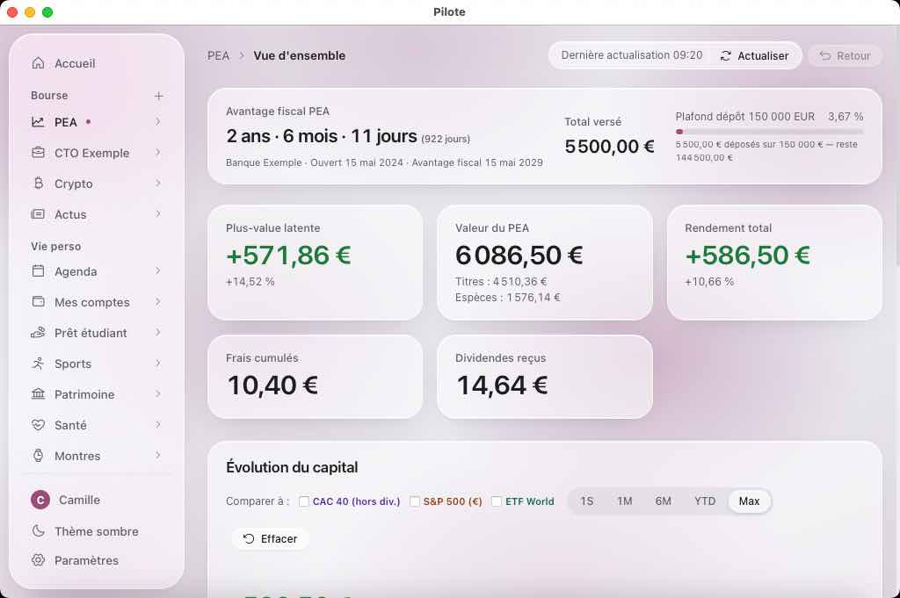
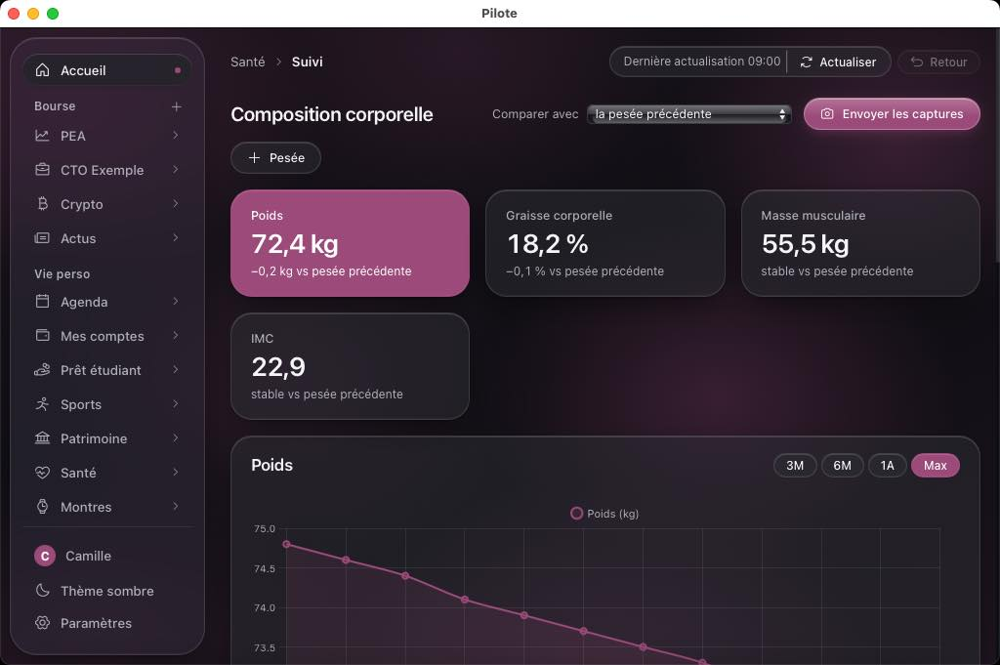
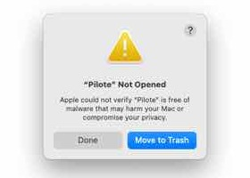

Pilote tourne aussi sur votre Mac.
Bourse, budget, sport, santé et patrimoine dans une seule application, sans compte : vos données restent sur votre Mac. La version Mac est la même que sous Windows. Elle n'est pas encore signée par Apple, d'où une manipulation au premier lancement, expliquée ici pas à pas.


Installer
Six étapes, une seule fois
Comptez cinq minutes. Les étapes 4 à 6 ne se font qu'au premier lancement : ensuite, Pilote s'ouvre d'un double-clic et installe lui-même ses mises à jour.
-
Télécharger Pilote
Cliquez sur Pilote_Mac.zip. Le lien mène toujours à la dernière version (elle est aussi sur la page des versions, rubrique Assets).
-
Le décompresser
Avec Safari, c'est déjà fait : Pilote vous attend dans le dossier Téléchargements. Sinon, double-cliquez sur
Pilote_Mac.zipdans le Finder. -
Le glisser dans Applications
Dans une fenêtre du Finder, faites glisser Pilote sur Applications, dans la barre latérale.
C'est ce qui permet à Pilote de se mettre à jour. En cas d'oubli, il propose de s'y ranger lui-même à son premier lancement.
-
L'ouvrir une première fois
Double-cliquez sur Pilote. macOS refuse de l'ouvrir : il ne peut pas vérifier une application qui n'est pas signée par Apple. Fermez l'avertissement avec Terminé, surtout pas « Placer dans la corbeille ».

L'avertissement, ici sur un Mac réglé en anglais (« Done » correspond à Terminé). -
L'autoriser dans les Réglages
Menu Pomme Réglages Système Confidentialité et sécurité, puis descendez jusqu'à la rubrique Sécurité. Une ligne y parle de Pilote : cliquez sur Ouvrir quand même.
Ce bouton ne reste affiché qu'environ une heure après l'étape 4. Passé ce délai, rouvrez Pilote une fois pour le faire revenir. -
Confirmer
macOS demande une dernière fois s'il faut ouvrir Pilote : confirmez avec Ouvrir (ou Ouvrir quand même), puis saisissez le mot de passe de votre session et cliquez sur OK.
C'est fini : Pilote est enregistré comme une exception et s'ouvre désormais comme n'importe quelle application.
Plus rapide : une ligne dans le Terminal
Ouvrez Applications Utilitaires Terminal, collez cette ligne puis appuyez sur Entrée. Elle télécharge Pilote, le range dans Applications et l'ouvre, sans les étapes 4 à 6 : l'avertissement de macOS ne vise que les fichiers téléchargés par un navigateur.
curl -fL https://github.com/pilote-appli/pilote/releases/latest/download/Pilote_Mac.zip -o /tmp/Pilote_Mac.zip && ditto -x -k /tmp/Pilote_Mac.zip /Applications && open /Applications/Pilote.app
Version signée par Apple
Sans les étapes 4 à 6
Pour qu'un Mac ouvre Pilote sans avertissement, l'application doit être signée et vérifiée par Apple. Il faut pour cela le programme développeur d'Apple, payant chaque année. Pilote est gratuit et fait par un étudiant : c'est la seule dépense que demande la version Mac.
Être prévenu à sa sortie
Envoyez un mail, même vide : vous serez prévenu le jour où la version signée sortira. Votre adresse ne sert à rien d'autre.
Rejoindre la liste d'attenteLe bouton ouvre votre messagerie. Sinon, écrivez à pilote.appli+mac@gmail.com.
Aider à la financer
C'est le prix du programme développeur d'Apple, à renouveler chaque année. Quand la cagnotte l'atteint, la version signée peut être préparée.
Participer sur Ko-fi [À compléter : lien de la page Ko-fi]Questions
Avant d'installer
Pourquoi macOS dit-il qu'il ne peut pas vérifier Pilote ?
Apple ne vérifie que les applications dont l'auteur paie le programme développeur. Ce message ne dit pas que Pilote est dangereux, seulement qu'Apple ne l'a pas examiné. Le code de Pilote est public sur GitHub : chacun peut le lire.
Le clic droit, puis « Ouvrir », ne suffit plus ?
Depuis macOS 15 Sequoia, ce raccourci ne contourne plus l'avertissement. Passez par Confidentialité et sécurité (étape 5), ou par la ligne du Terminal.
Faudra-t-il recommencer à chaque mise à jour ?
Normalement non : Pilote télécharge et installe lui-même ses mises à jour, et l'avertissement ne vise que les fichiers téléchargés par un navigateur. Vos données restent en place, hors de l'application.
Où vont mes données ?
Nulle part ailleurs que sur votre Mac, dans ~/Library/Application Support/Pilote/Donnees. Pas de compte, pas de serveur. Le détail est sur la page Confidentialité.
Et sur un Mac Intel ?
La version Mac est faite pour les puces Apple (M1 et suivantes). Un Mac Intel n'est pas pris en charge.